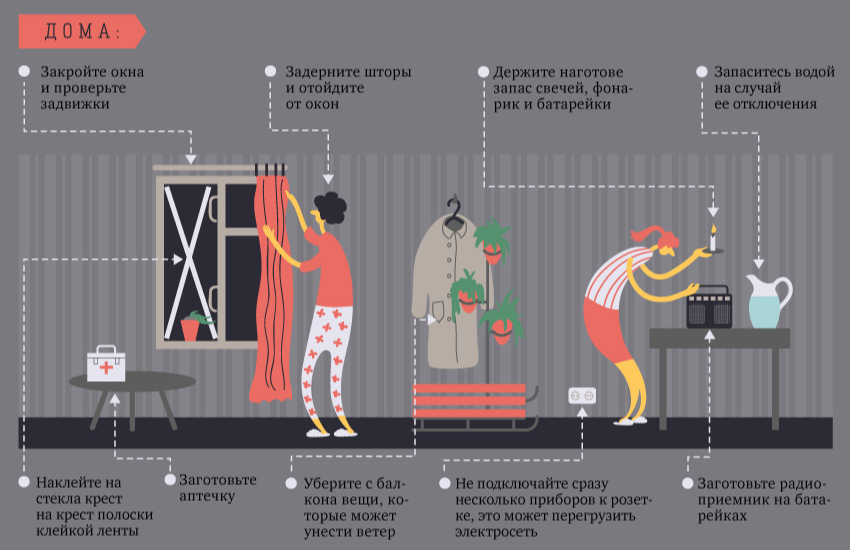
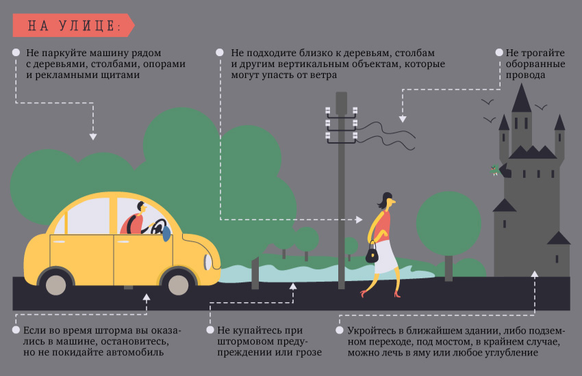

Меры безопасности при штормовом предупреждении:
Плотно закрыть и укрепить все двери и окна;
подготовить запас воды и пищи, медикаментов, фонарик, свечи, приемник на батарейках, документы и деньги;
отключить газ и электричество;
убрать с балконов (в частном доме – со дворов) предметы, которые могут быть унесены ветром;
при сильных порывах ветра необходимо отойти от оконных проемов и стать вплотную к простенку;
из легких зданий необходимо перейти в более прочные или убежища гражданской обороны;
в частном доме лучше перебраться в наиболее просторную и прочную его часть, а лучше всего в подвал.


Если вы оказались на улице во время урагана:
Держитесь подальше от зданий и строений, высоких столбов, деревьев, рекламных щитов, мачт, опор и электропроводов;
нельзя находиться на мостах, путепроводах, эстакадах, в местах хранения легковоспламеняющихся и ядовитых веществ;
спрячьтесь под мостом, железобетонным навесом, в подвале, погребе. Можно лечь в яму или любое углубление;
нельзя залезать на крышу и прятаться на чердаке;
если вы едете на машине по равнине, остановитесь, но не покидайте автомобиль. Плотнее закройте его двери и окна. Во время снежной бури укройте чем-нибудь двигатель со стороны радиатора;
если ветер несильный, можно время от времени разгребать снег с автомобиля, чтобы не оказаться погребенным под толстым слоем снега;
если вы находитесь в городском транспорте, немедленно покиньте его и ищите убежище;
если стихия застигла вас на возвышенном или открытом месте, бегите (ползите) в сторону какого-либо укрытия, которое могло бы погасить силу ветра, но берегитесь падающих веток и деревьев.
Нельзя выходить на улицу сразу же после ослабления ветра, так как через несколько минут может возникнуть новый его порыв. После того, как ураган закончился, выходя из дома, вначале осмотритесь — нет ли нависающих предметов и частей конструкции, оборванных проводов, нет ли запаха газа. Огонь нельзя зажигать до тех пор, пока не будет уверенности, что обошлось без утечек.
После урагана не рекомендуется заходить в поврежденные строения, так как они могут обрушиться.